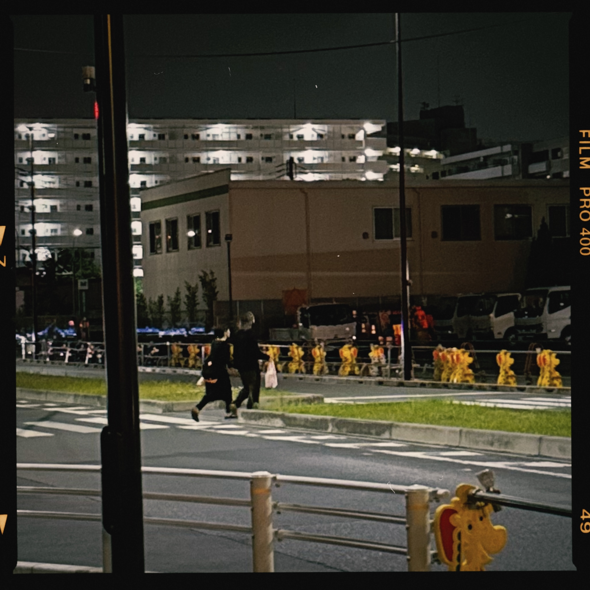

어제도 늘상 그렇듯, 바지는 젖었고, 배도 몹시 고팠다. 다른 알바생들의 밥을 다 만들어줬지만, 시간이 없어 내 밥은 만들지 못했다. 그것이 조금 짜증이 났다. 배가 고팠다. 맥도날드에서 빅맥을 먹고 싶었다. 일본은 골든위크라 맥도날드가 어제 원래 영업시간인 한 시 보다 한 시간 일찍인 열 두시에 문을 닫았다. 편의점에서 배를 채울 생각에 조금 짜증이 났다. 야시오역에서 내렸다. 배고프고 피곤한데 빨리 집에 들어갈 수 없게 되어서 이 시점부터 짜증이 아닌 '화'가 나기 시작했다.
나에게 있어 '짜증'과 '화'의 차이는 한 가지이다. 전자의 경우 속으로만 생각할 수 있고 겉으로는 전혀 드러나지 않을 수 있다. 왜냐하면 그런 '짜증'은 금방 사라지기 때문이다. '화'는 티가 나기 시작한다. 스스로 뚱한 표정을 짓기 시작한다. 한숨을 쉬기 시작한다. 이를 꽉 물었다가 놓는다. 사람이 아무도 없는 것을 몇 차례나 확인하고 허공에 주먹질을 한다

수정안